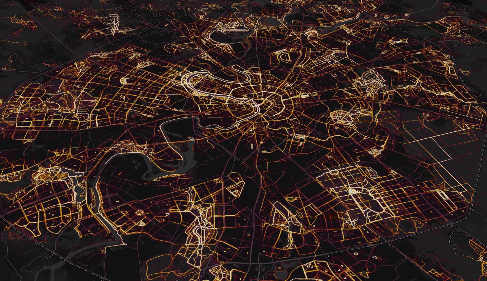
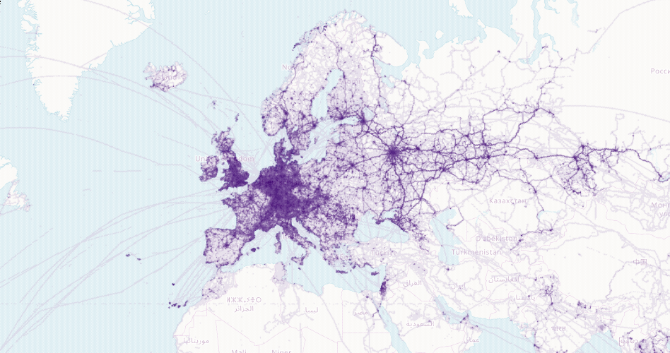
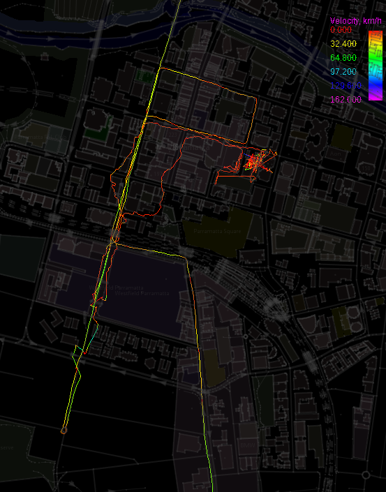
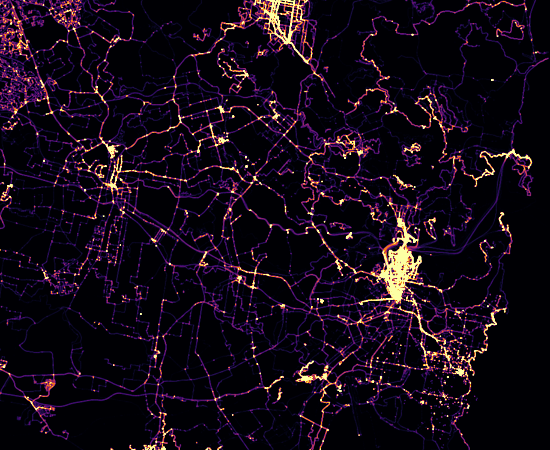
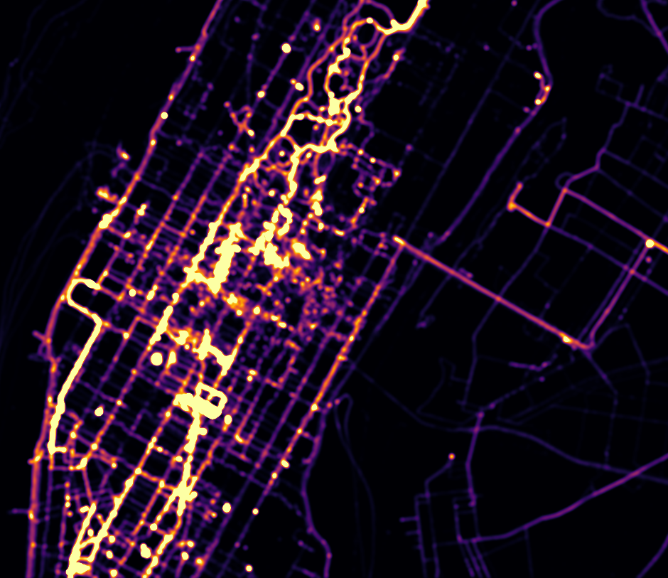
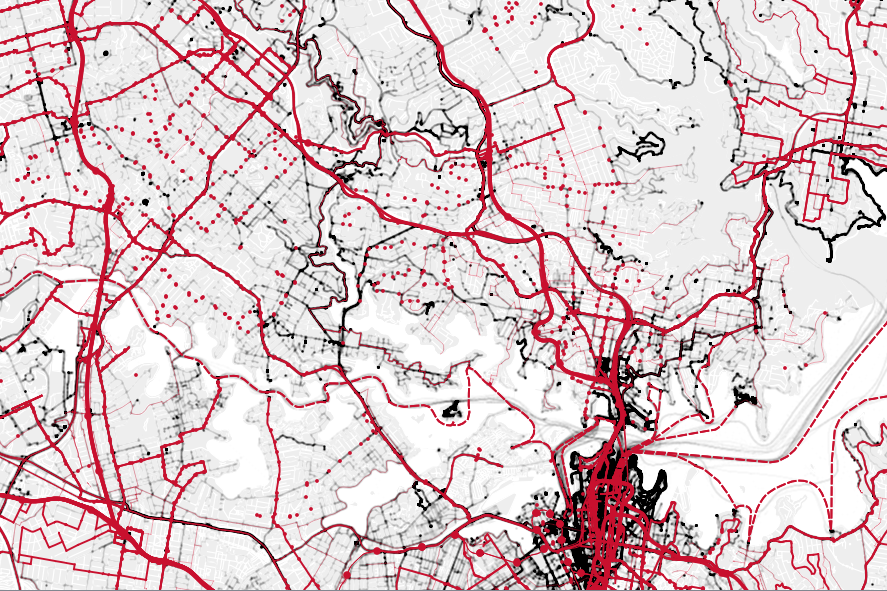

I work as an architect, and one of the data available to us when masterplanning and early phases of an urban design project is GPS track activity. Knowing where people drive, where people walk, and cycle and recreate allows us to make decisions such as where to define architectural axes, where to place retail, and how to extend public transport and pedestrian walkways.
One of the resources available is from a company known as Strava, who runs a proprietary fitness social network, where fitness buffs can track their movements via GPS devices (which can be as simple as your phone) and compare cycling routes, distances run, and so on. Primarily used by runners and cyclists, these GPS logs are voluntarily uploaded to Strava, who then aggregates all the data and resells it to urban design parties, known as their "Strava Metro" initiative.
Publicly without purchasing any data, Strava also hosts a global GPS heatmap where you can visually see the fire of activity by runners and cyclists. Zooming in shows you right down to where people run down various streets. As a high-level overview, this is a great graphic and can immediately pinpoint activity. It also is a fantastic feat of engineering, processing 5 terabytes of raw input data. That's big data!

Of course, just recently Strava decided to stop showing this public heatmap at high zoom levels and locked it behind a paywall. Thankfully, there are alternatives.
In a previous post, I introduced an open-data initiative known as OpenStreetMaps. Strava is largely based on OpenStreetMaps and uses it as a base layer embedded into MapBox, and also has a fork of the OSM iD editor called "Strava Slide", to allow people to edit routes based off strava GPS data tracks. However, OSM itself has many active GPS track contributors (used for various purposes, such as mapping new routes and calibrating the map), and we can use this open data in lieu of the proprietary product offered by Strava. Below, we see the world's GPS tracks from the perspective of OSM visualised by Pascal Neis.

Before I get into the specifics of getting GPS data, I'd like to show you what data is in a GPS track. Here's some GPS tracks visualised with JOSM. We can see things like speed, direction, and sometimes, elevation, if it is recorded. See those red segments of the line? Those are traffic lights!

OSM has an API and Planet GPS extract available to download GPS data. The Planet GPX is rather unwieldy, and is also very outdated (from 2013). The API is not the best either, in that it only returns 5,000 GPS points per query, and doesn't quantify the total pages of results, so that you can't really tell with one query how many points you need to fetch in advance. However, if you query the API and put a page number higher than what is available, it won't return any points. So using a binary search you can find out how many pages to extract.
For the area of Sydney, there are roughly 750 pages of results, so that means just under 4 million GPS points. Here's a heat map visualisation of it I made using QGIS (but JOSM also has a heat map visualisation feature). You won't need huge supercomputers processing the data, either.

Here's another of Manhattan, New York.

We can couple this visualisation with other OSM data such as all public transport nodes. In this case, railway tracks, bus routes, ferry routes, cycling routes, train stations, and bus stops are shown. This is also created with QGIS.

There are a few pros and cons to using this GPS data. The pro is that it's more general purpose: it's not only used by runners and cyclists, it's used by regular people (well, GIS geeks) doing everyday things like shopping. Unfortunately, OSM isn't that widely used, and so the data is relatively sparse. In remote areas perhaps no-one has walked that route, or only a few people have. So you don't get a sense of what they're doing. The GPS data is also not processed, so you'll have to do your own cleaning: especially in the city where GPS data goes a bit haywire with all the tall buildings.
Have fun and happy mapping!